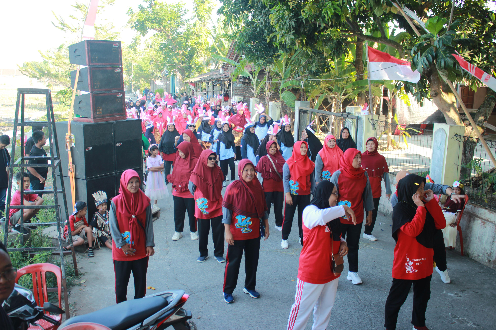

Selamat Datang di Tunas Remaja Kriyan
Bersatu, Berkarya, dan Membangun Desa dengan Semangat Pemuda

Profil
Tunas Remaja Kriyan adalah wadah berkumpulnya generasi muda Desa Kriyan untuk meningkatkan persaudaraan, kreativitas, dan kepedulian sosial demi kemajuan masyarakat. Kami hadir sebagai sarana bagi pemuda untuk menyalurkan bakat, ide, serta semangat dalam membangun lingkungan yang lebih baik.
Kegiatan
Kontak
Hubungi kami melalui:
- Email: tunasremajakriyan@gmail.com
- Instagram: @tunasremaja.kriyan
- Alamat: Dk. Kriyan, Babadan, Karangdowo, Klaten